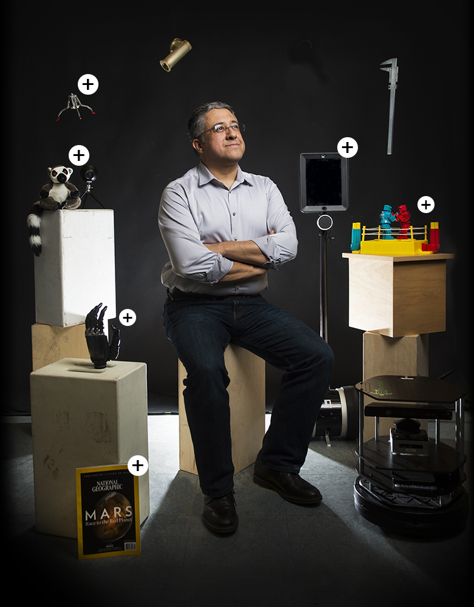
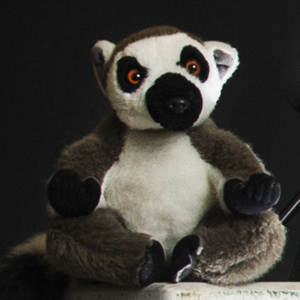
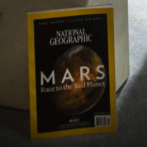
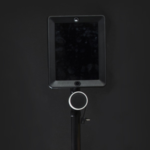
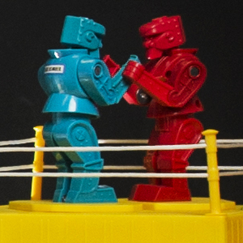
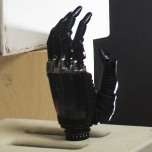
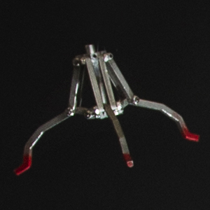

|  | Taskin PadirTaskin Padir, associate professor in the Department of Electrical and Computer Engineering, is an expert in modeling and control of robotic systems. He is leading a Northeastern team doing advanced research and development work on humanoid robot prototypes for NASA. |
|  | Like professional athletes who are wary to break with tradition, so too is Padir's lab. |
|  | Though it's not altogether uncommon to develop a collection of magazines, it is uncommon to be featured in one. |
|  | This Double telepresence robot-described by Padir as "FaceTime on wheels"-enables Padir and others to communicate and give tours from afar. The large screens and remote-controllable wheels allow the user to view the world from the perspective of the robot. |
|  | Among the pile of award-winning robots Padir and his colleagues have built, there's an incongruity-a brightly colored Rock 'em Sock 'em Robots game. It sits on the corner of his desk, Padir says, because it brings back fond memories of former students and the robotics competitions (slightly more advanced than the toy's red vs. blue setup) in which they've competed. |
|  | Padir's work also includes designing brain-controlled prosthetics, such as this hand, which could be used to handle dangerous or sensitive materials. Padir is working with the Department of Energy to develop ways to replace the need for human hands to handle nuclear material. |
|  | This multifunctional gripper can be attached to a more robust robot in order to improve the safety of people in dangerous situations. The gripper, for example, would be built into a bomb disposal robot designed by Padir's students. |